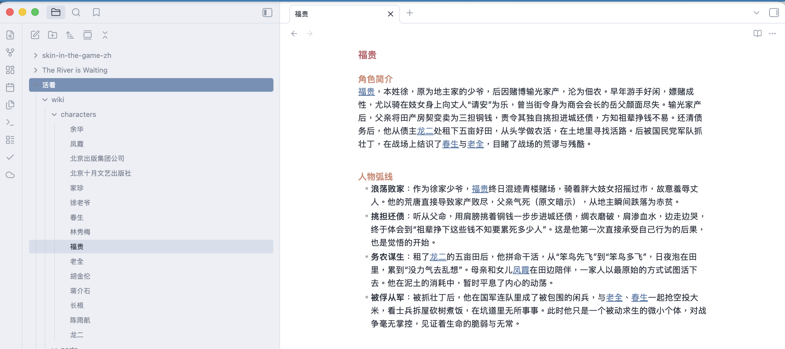

01
触发
在 Obsidian 文件列表中右键 PDF
为深度阅读自动搭建知识结构。从本地库上传 PDF 到 Cloudflare，用 LLM 生成章节、人物、地点、主题和双链笔记，再同步回你的 Obsidian。
灵感来自 Andrej Karpathy 的 LLM Wiki 想法：不要只让模型总结一本书，而是把它变成可浏览、可链接、可持续扩展的知识网站。

从 Obsidian 里的一个右键动作开始，后台完成上传、处理和同步。
在 Obsidian 文件列表中右键 PDF
Worker 将原始文件写入 Cloudflare R2
LLM 提取实体、关系、章节和主题
生成的 Wiki 笔记回写到你的库
福贵是《[[活着]]》中的核心人物。生成笔记会把他与 [[家珍]]、[[有庆]]、[[凤霞]]、土地、饥荒和时代变迁等节点连接起来，形成可继续阅读和扩展的 Obsidian 图谱。
普通 AI 工具会总结。Book Wiki Sync 会建构。它把人物、地点、概念和章节拆成原子笔记，并保留一本书真正有价值的连接网络。
最终结果不是一篇长摘要，而是一组能直接融入 Zettelkasten 或第二大脑工作流的双链笔记。
每个实体都是节点，每次提及都可以成为 wikilink。
小而聚焦的笔记，方便引用、嵌入和重组。
Edge-first processing pipeline
PDF 转 Markdown-ish source.md，保留可检查的中间文本。
面向中文书籍、人名、章节标题和 Wiki 格式。
用 Obsidian wikilink 语法交叉引用实体和主题。
原始文件、任务状态和输出都在你的 Cloudflare 账户中。
长 PDF 会拆分为适合 LLM 的章节或逻辑块。
从文件菜单触发处理，也支持章节已读标记。
运行在你自己的 Cloudflare 和 LLM API Key 上。
生成章节、人物、地点、主题、部卷和索引笔记。
需要启用 Workers、R2、KV 和 Queues。
支持 OpenAI-compatible Chat Completions 接口。
通过社区插件在本地库中触发和同步。
把结构化笔记交给自动化流程，让你把时间花在阅读、连接和思考上。